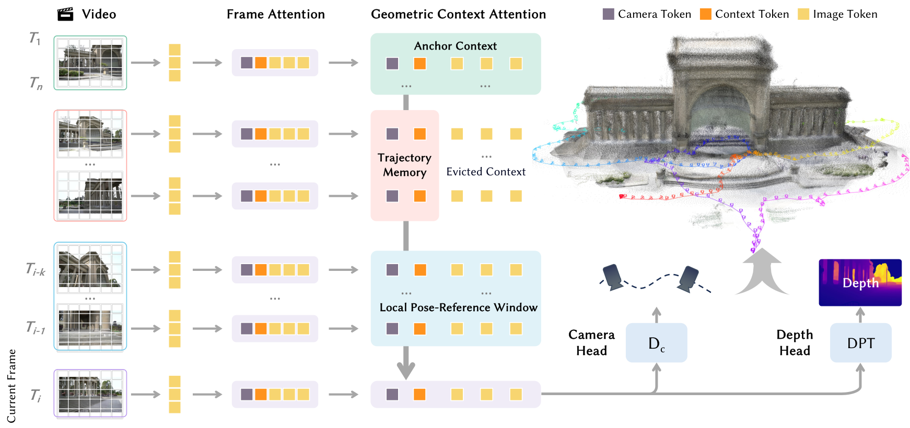

问题设定与方法边界
论文从连续 RGB 估计相机与深度，使用 anchor、近期窗口和轨迹记忆。历史帧退出窗口后保留六个上下文 tokens；Direct 模式与分窗重置的 VO 模式应分别评价。方法细节见 §3.2、§4.4。
依据：论文相关章节 ↗
读 Figure 4：哪些历史真的被留下

Lin-Zhuo Chen 等，2026 · CC BY 4.0 · 原图未修改 · 论文原文 ↗
原图的关键不是增加一个独立检索库，而是改变历史 token 的保留方式：近期帧保留密集信息；离开窗口后，每帧保留 camera、anchor 与四个 register，共六个特殊 token。初始上下文与近期窗口承担不同的参照作用。
沿图中的注意力连接阅读：当前帧需要从历史状态恢复空间关系，而历史图像 token 不必全部常驻。这里压缩的是后续网络能访问的表示，不是把过去的原图缩小保存。
这也解释了局限：每帧六个 token 很紧凑，但仍随序列增长。紧凑历史不等同于固定容量。若研究严格预算内的记忆更新，应将总 token 数随时间的曲线作为独立指标。
依据：论文相关章节 ↗
关键 claim 与证据：不要把不同模式混在一起
作者强调长序列流式重建。阅读该主张时，需要区分直接连续推理与 VO 窗口重置、重叠对齐的设置；长序列结果并不意味着直接推理始终无退化。
消融中，TartanGround 的 ATE 从 7.88 到 7.46，再在加入 VideoRoPE 后降至 5.98。它说明多个设计共同贡献成绩，不能将最终提升全部记在历史压缩上。
对我们而言，合理问题是：压缩以后，哪些空间细节仍然可恢复，哪些已不可逆地丢失？这是读出能力与保留策略的问题；仅仅让 token 获得类别名称，尚不能回答。
依据：论文相关章节 ↗
为什么需要三种历史上下文
可以把流式几何推理拆成三个不同问题：当前结果采用哪个参考系；当前帧与附近观测怎样对应；离开局部窗口以后，早先经过的路径还能提供什么约束。三者时间跨度和信息密度不同，因此把它们放入完全相同的缓存策略，不一定有效。
固定参考解决坐标约定，但远处参考图像与当前画面可能几乎没有重叠。近期密集观测容易建立对应，却不能完整解释长期累积误差。紧凑历史补充远期上下文，但其信息容量有限。这个分工提供的是信息组织原则，不能据此断言模型已经实现显式的回环检测或全局优化。
阅读 attention 架构时，应分别检查谁可以读取谁、哪些状态进入缓存、何时失去密集特征。只画一个“memory”方框，容易把训练中可访问的历史与推理中实际保存的历史混为一谈。
从 token 数推导缓存增长
下面是一个通用的缓存记账模型：N 为每帧密集图像 token 数，k 为固定密集上下文帧数，r 为每个历史条目的摘要 token 数，T 为累计保留条目数。忽略固定特殊 tokens 后，可以把历史长度的影响写成下式。
当 T 很大时，历史项仍然增长。减小 r 改善增长斜率，却不会自动把线性函数变成常数。这一区别直接关系到“长序列可运行”和“任意长度严格固定容量”是否属于同一个主张。
token 数还不是显存：K 与 V 都要存储，多层 attention 各有缓存，数据类型也会改变字节数。公平实验至少报告 tokens、层数、精度与峰值显存。将缓存转移到 CPU 可以降低 GPU 占用，但并未消除总存储成本。
训练目标如何影响长期记忆
一般而言，深度与位姿监督会训练整条可微路径，但这不意味着每一部分历史状态都贡献了预测。强大的当前图像特征可能承担大多数任务，某些摘要 tokens 只是保留了很少的辅助信息。
要研究 memory，可以设计读取干预：保持同一模型和输入不变，分别移除远期历史、交换历史顺序、限制历史长度，并观察误差变化。这是建议的诊断实验，不是原论文已经给出的结论。干预时也要注意分布变化：突然清空整个上下文的退化，并不能精确量化某一个 token 的价值。
训练实现同样重要。如果跨帧缓存全部 detach，后续损失无法沿那条路径更新此前状态的生成过程。截断反向传播有合理的资源动机，但论文中的“端到端”应对应到具体的展开长度和梯度边界。
实验结果应怎样解释
原论文以位姿、重建和组件消融评估方法。正文 §6.4 报告加入轨迹上下文后的改善；这支持紧凑历史有用，但不能单独证明这些 tokens 保存了对象身份或语言语义。
依据：论文相关章节 ↗
如何建立可解释的对照
整体方法与外部模型的比较，回答的是系统竞争力；固定其他条件的组件消融，才更接近解释某个设计的贡献。两者不能互相替代。不同主干、训练数据或推理方式可能同时改变结果。
长序列研究尤其需要画随时间变化的误差曲线。单个平均数可能掩盖某次失败后再恢复，也可能掩盖局部深度准确但全局位姿漂移。语义扩展还应同时保留几何指标，避免模型用重建退化换取分割提升。
| 比较维度 | 必须固定或明确报告 | 能回答的问题 |
|---|---|---|
| 记忆容量 | 窗口、历史条目数、token 维度 | 同等存储下是否更有效 |
| 序列条件 | 相同帧、分辨率、采样与输入参数 | 提升是否来自额外观测 |
| 推理模式 | 持续缓存或分窗重置、对齐方式 | 误差来自模型还是窗口拼接 |
| 效率 | 硬件、精度、预热与数据搬运 | 延迟和显存是否可复现 |
对语义记忆研究的启示
最小研究问题是：显式语义监督是否能让相同预算的长期状态更有用。必须同时比较原模型、只加密集语义输出、对压缩记忆直接增加语义监督。前两者区分额外多任务训练，后两者区分监督是否真正经过瓶颈。
若只改善当前帧分割，而移除远期记忆后收益仍完全保留，那么“长期记忆改进”尚未获得支持。反过来，若长期几何稳定性改善，但未检查同容量普通 tokens，也可能只是增加容量的结果。
这条研究路线的风险是语义粒度与几何粒度不一致。一个区域在类别上均匀，并不意味着其空间结构可以被任意平均。语义相似性只能辅助组织，不能代替空间对应。
复现顺序与尚未验证的部分
先验证单次推理的相机约定与深度尺度，再运行短序列；随后记录缓存大小随序列增长的变化，最后比较长轨迹结果。这个顺序能把坐标错误、缓存错误和真正的长期遗忘分开。
本笔记没有实际运行作者模型，也不把论文报告的结果当作本地复现。待复现时应保存精确提交、权重版本、命令、数据列表和随机种子，并检查动态区域、弱纹理和重访片段是否存在不同失败模式。
进一步核查的问题
为什么六个 token 不等于固定总容量？
每个历史条目很小，但条目数仍会随序列增加。需要分别讨论单位条目大小和总条目数。
最值得验证的研究假设是什么？
相同缓存预算下，显式语义保持能否帮助后续几何预测；需要排除额外容量和训练监督的混杂影响。
参考资料与原图
本篇使用上方标明出处的论文原图。原图不作结构重绘；点击可放大，图意与论证边界见正文。